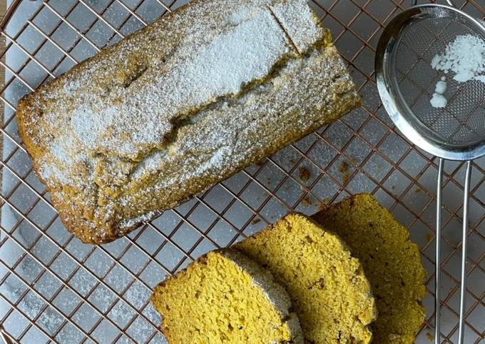

RECETA DE PANQUE DE CALABAZA
Compartida por Paula Flores
timer
person
Ingredientes
- 1 ¾ tazas de harina de arroz integral extra fina
- 1 cdita de bicarbonato de sodio
- 1 pizca de sal
- 1 ½ cdita de pumpkin spice (mezcla de especias para calabaza)
¿Cómo hacer pumpkin spice?
- ¾ tazas de monkfruit con eritritol
- 2 huevos
- ⅓ taza de agua
- ½ taza de aceite de coco refinado
- 1 taza de puré de calabaza
- Monkfruit pulverizado al gusto, para decorar
Procedimiento
- Mezcla por un lado los líquidos: el agua, los huevos, el aceite y el puré de calabaza.
- Por otro lado mezcla los secos: la harina, el bicarbonato, la sal, el pumpkin spice y el monkfruit.
- Luego agregar los líquidos a los sólidos y mezclar con batidor de globo.
- Colocar la mezcla en un molde para panque aceitado y cubierto con papel encerado.
- Hornear a 180 grados C hasta que al insertar un palillo este salga limpio, aproximadamente unos 30 minutos.
- Cubrir con monkfruit pulverizado para decorar.
